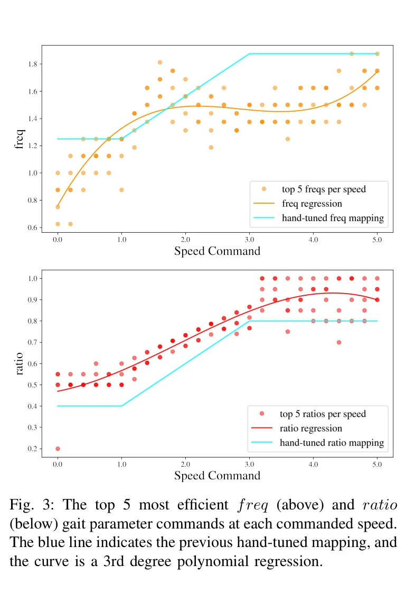
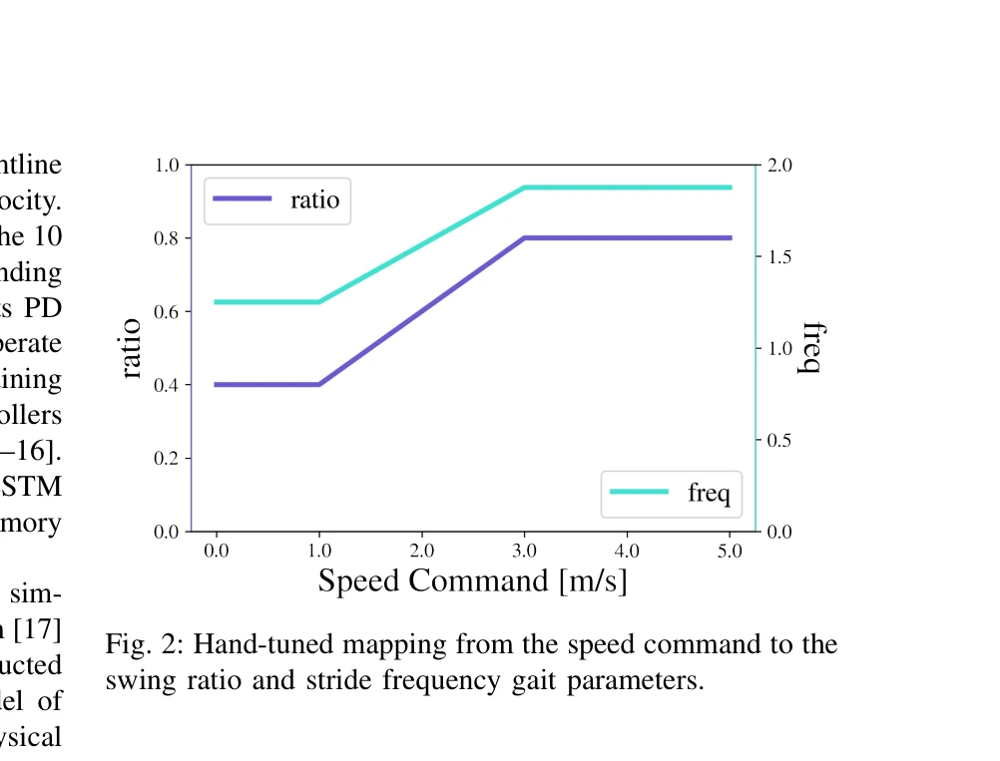

저자: Devin Crowley, Jeremy Dao, Helei Duan, Kevin Green, Jonathan Hurst, Alan Fern | 날짜: 2025-08-05 | URL: https://arxiv.org/abs/2508.03070

Fig. 3: The top 5 most efficient freq (above) and ratio
이 논문은 이족 로봇 Cassie의 고속 주행 보행을 위해 보행 매개변수(stride frequency, swing ratio)를 체계적으로 최적화하고, 그 결과를 인간의 주행 역학과 비교하며, 최종적으로 100m 대시 기네스 월드레코드를 달성한 완전한 컨트롤러를 제시한다.
Fig. 3: The top 5 most efficient freq (above) and ratio

Fig. 2: Hand-tuned mapping from the speed command to the
총평: 이 논문은 이족 로봇의 고속 주행을 위한 보행 매개변수의 첫 체계적 최적화를 제시하고, 인간 주행 역학과의 흥미로운 비교를 통해 이론적 깊이를 제공하며, 기네스 월드레코드 달성으로 실질적 임팩트를 입증한 우수한 연구이다.